Attività B
Guarda la mappa: molti continenti oggi lontanissimi erano uniti in un unico supercontinente, il Gondwana. Quando si è spaccato, alcuni animali sono rimasti "intrappolati" ciascuno sul proprio pezzo.
↓ scorri per vedere la mappa, poi il gioco ↓
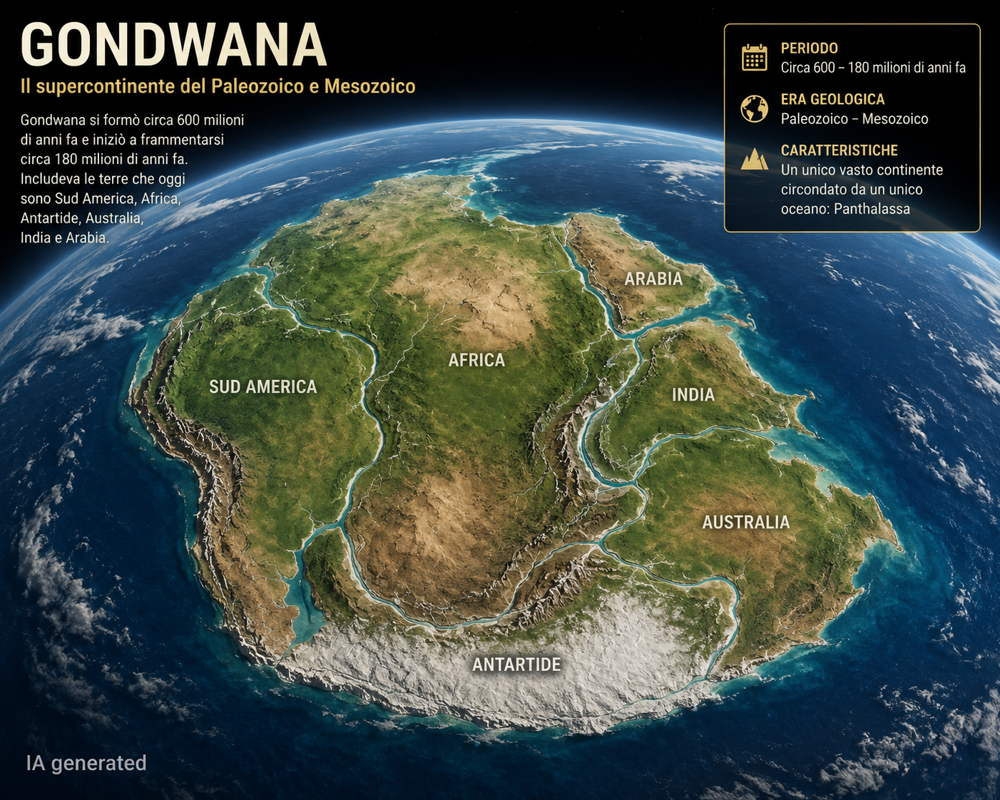
Il Gondwana, circa 600–180 milioni di anni fa — mappa generata con IA a scopo illustrativo
Tocca le due carte che pensi siano davvero parenti stretti del canguro. Non basta vivere nello stesso posto: serve essere lo stesso tipo di animale.
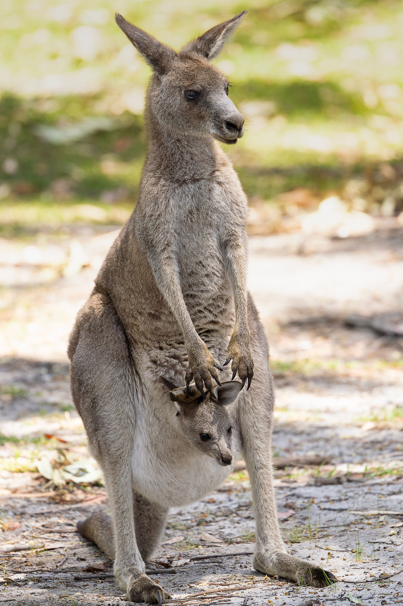
Canguro — Australia
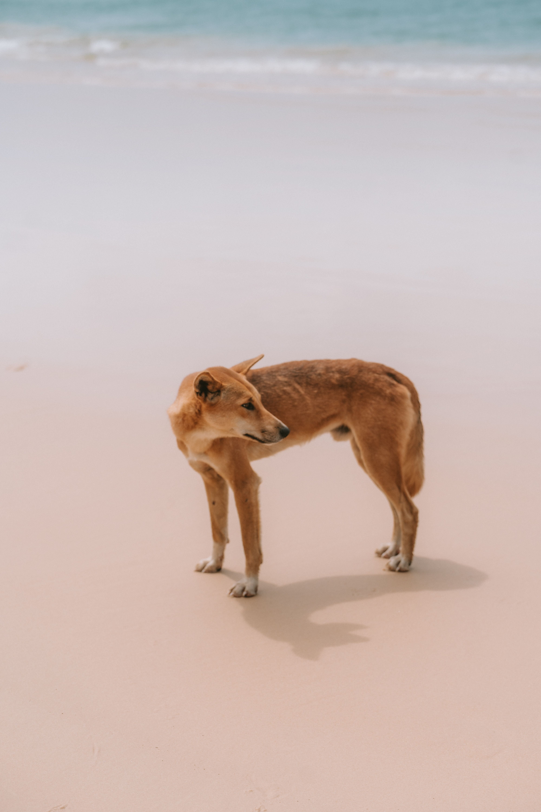
Dingo
Australia
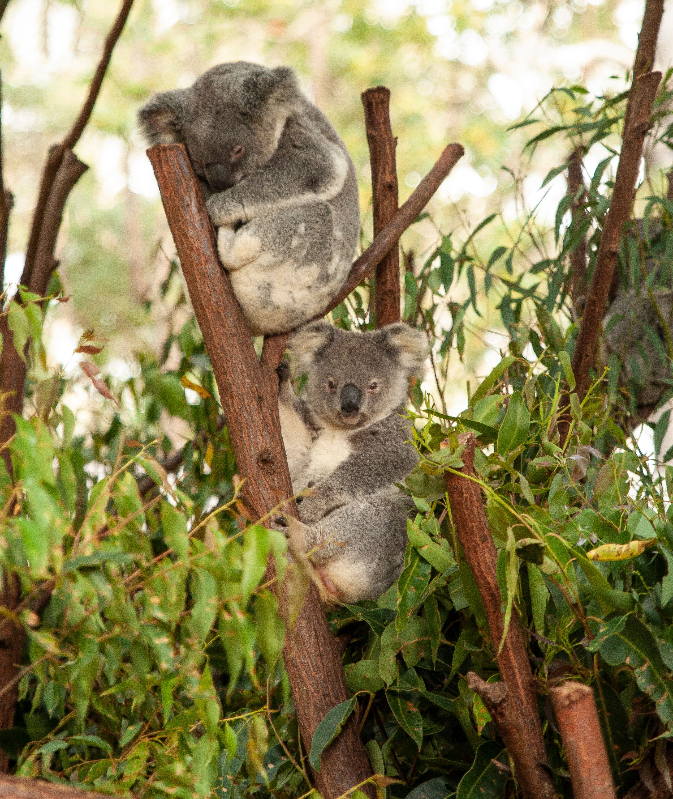
Koala
Australia
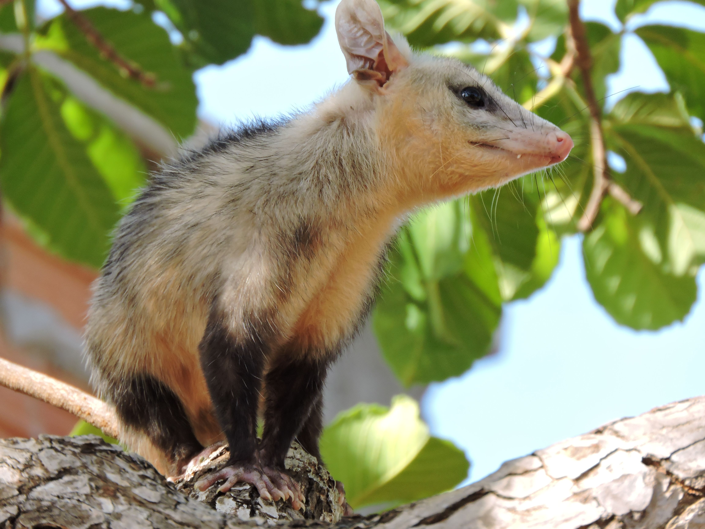
Opossum
Sud America
Platipo
Australia
Lo struzzo appartiene a un gruppo di uccelli speciali, chiamati ratiti: non volano e sono sparsi su continenti lontanissimi. Tocca le tre carte che pensi siano davvero suoi parenti stretti. Attenzione: non basta essere grandi o non saper volare.
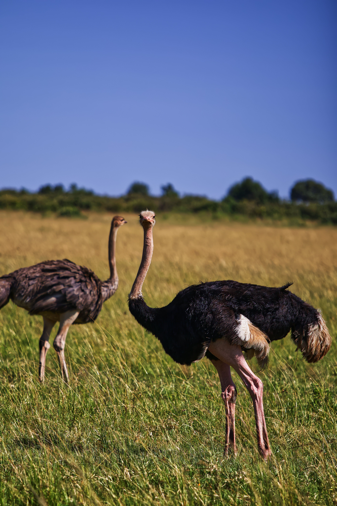
Struzzo — Africa
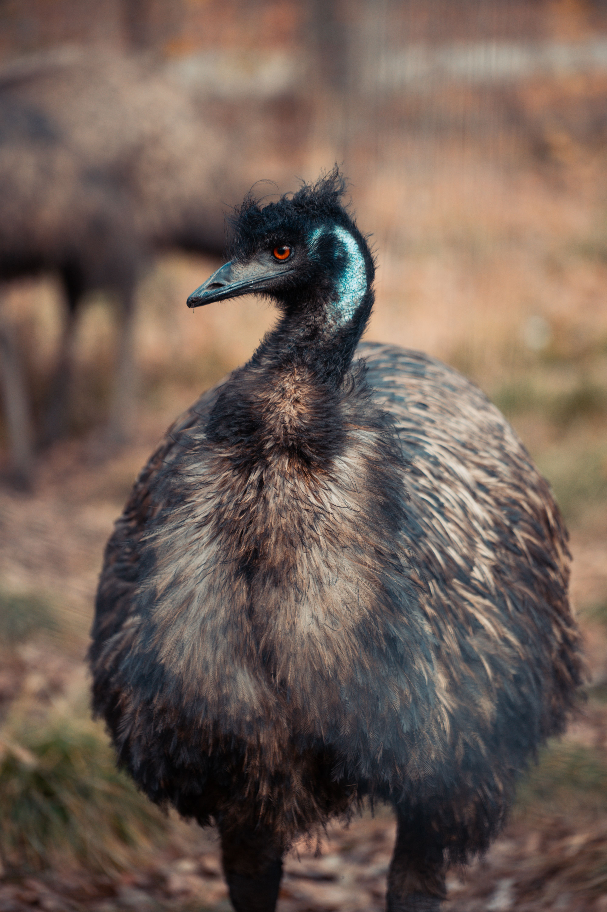
Emù
Australia
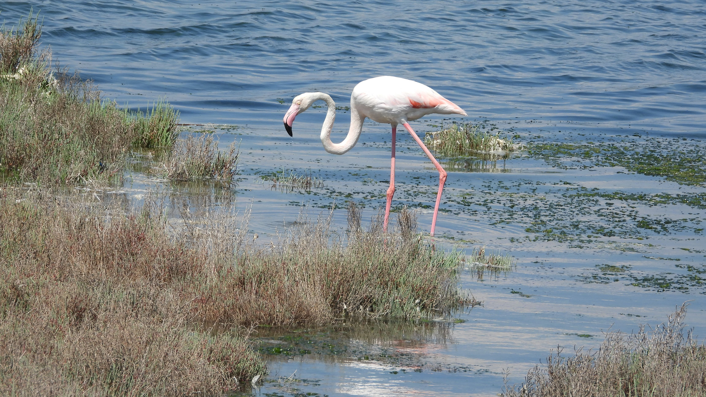
Fenicottero
Africa
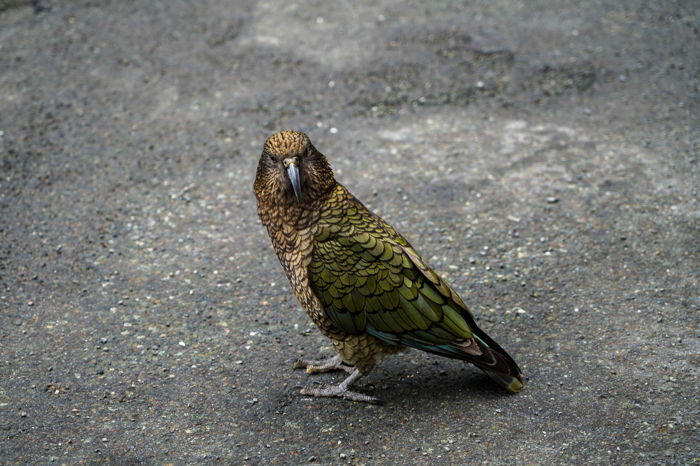
Kakapo
Nuova Zelanda
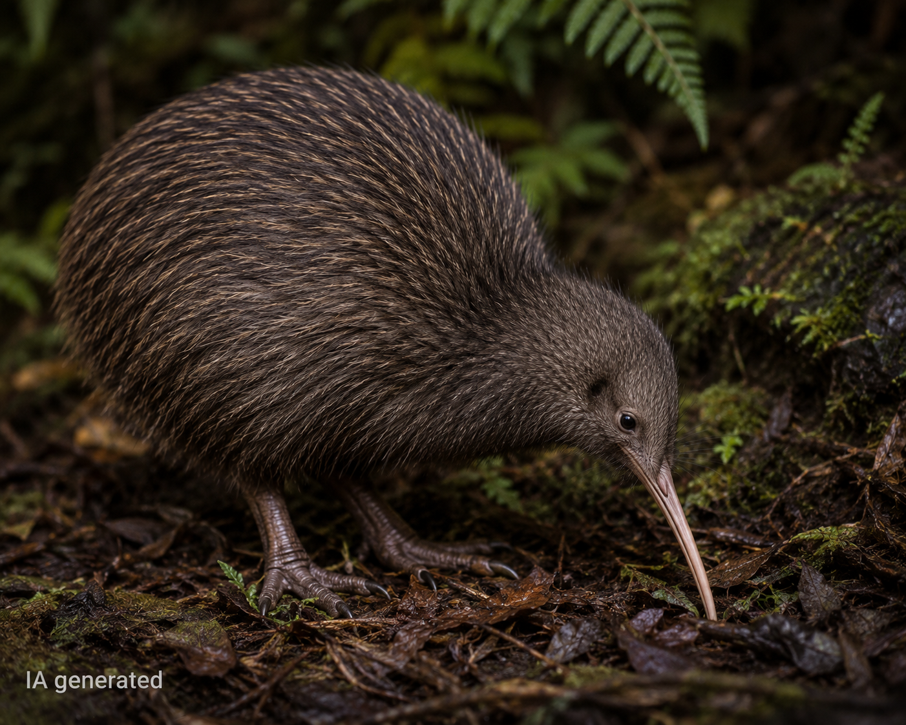
Kiwi
Nuova Zelanda
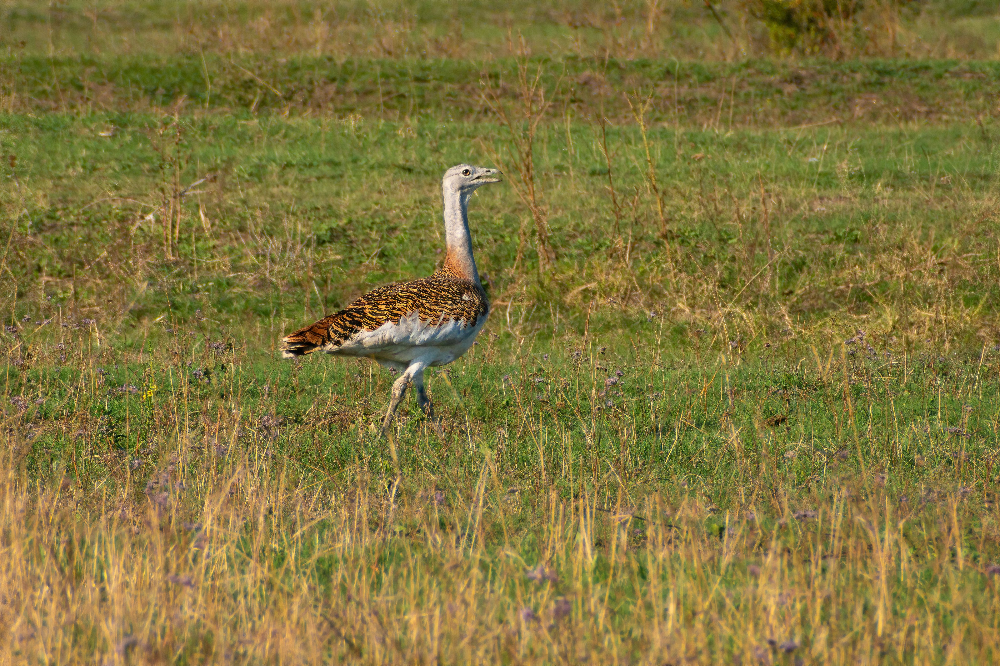
Otarda
Africa
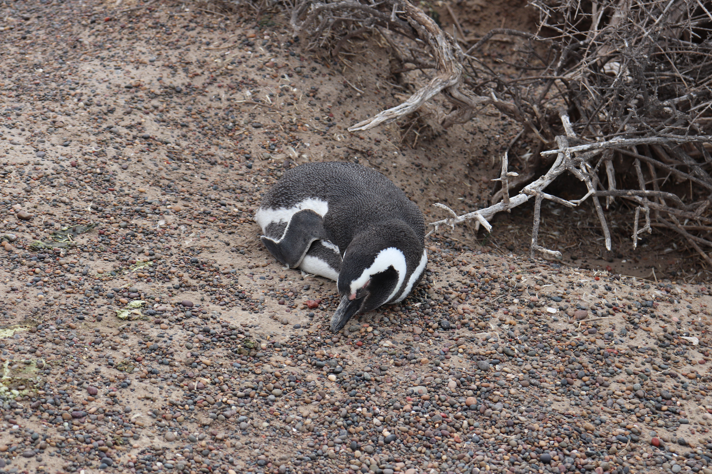
Pinguino
Antartide
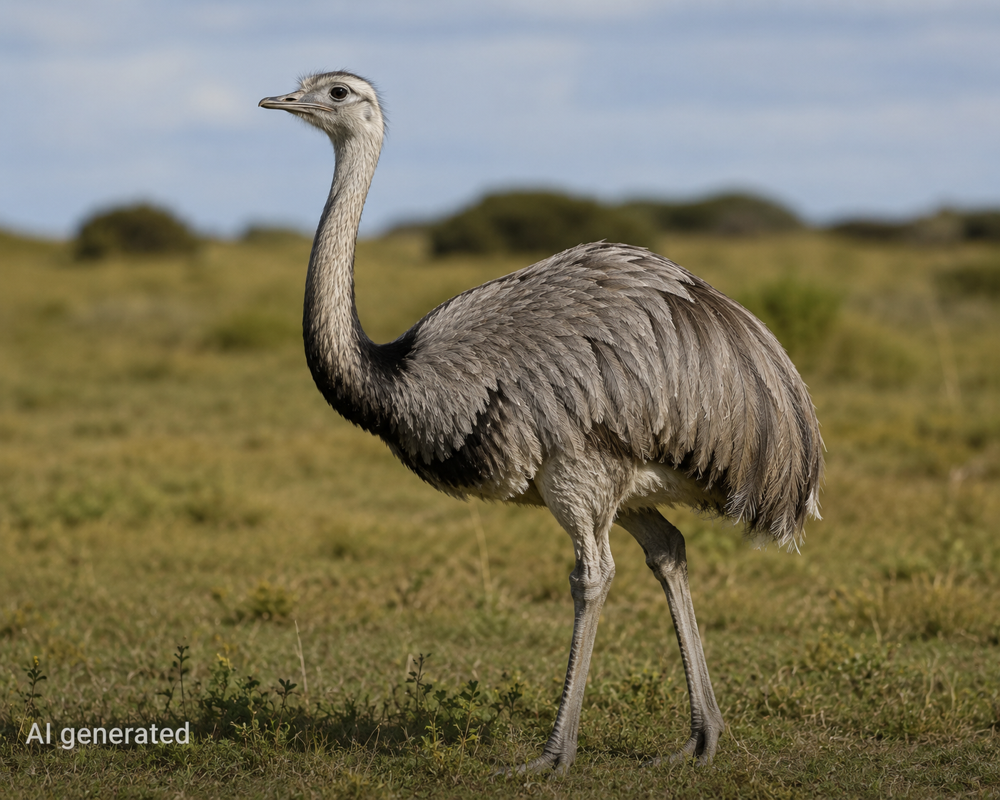
Rea
Sud America